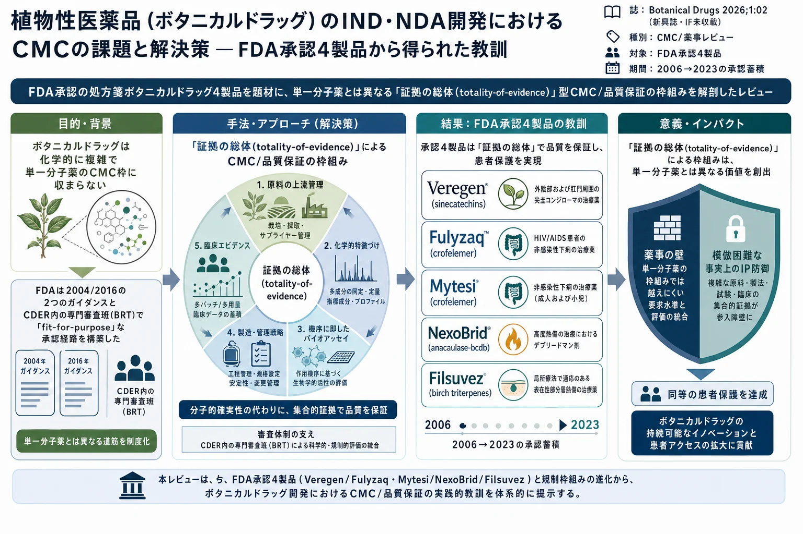

植物性医薬品（ボタニカルドラッグ）のIND・NDA開発におけるCMCの課題と解決策 — FDA承認4製品から得られた教訓

<!-- 方針: 9ページの薬事/CMCレビューの全訳。原文の節立て(Abstract→Introduction→2.承認4製品→3.考察→4.結論)に忠実。実験数値は無く比較Table 1が中心。「> 補足:」は訳者注。 -->
書誌情報
- 標題（原題）: CMC Challenges and Solutions in Botanical IND & NDA Development — Lessons Learned from Four Approved Botanical Drugs
- 著者・所属: Roger Luo（American Botanical Drug Association / 米国ボタニカルドラッグ協会）
- 掲載誌・巻号・DOI: Botanical Drugs. 2026;1:02. ISSN 3142-9386. https://doi.org/10.65239/botanicaldrugs.2026.02
- インパクトファクター: 未収載（Botanical Drugs は 2026 年創刊の新興オープンアクセス誌で、JCR にIFの登録がない）。捏造しないため「要確認／未収載」と記す。
- 受理経過 / ライセンス: 受理 2026-03-15、公開 2026-04-04（Received 2026-01-21 / Revised 2026-02-10）。CC BY 4.0（レビュー、オープンアクセス）
補足（この論文の位置づけ）: 実験論文ではなく、米国FDAのボタニカルドラッグ（植物性医薬品）審査制度をCMC（Chemistry, Manufacturing, and Controls＝化学・製造・品質管理）の観点から総括した総説。分析法の検量線や定量値は登場せず、承認4製品を通じて「複雑で完全には特徴づけられない植物由来製品を、どのように品質保証して薬として承認まで持っていくか」という薬事戦略を論じる。漢方・生薬QCの実務者にとっては、「単一マーカーで管理しきれない複雑系をどう規格化するか」という点で QAMS・指紋・スペクトル効果などの技術論と地続きの、規制側の思想を知る材料になる。
要旨（Abstract）
ボタニカルIND（治験薬申請）は、化学・製造・品質管理（CMC）と品質保証において、従来の単一分子医薬品開発とは一線を画す固有の課題を抱えている。20 年以上にわたり、FDA は 2 つの相次ぐガイダンス文書（2004 年・2016 年）、CDER（医薬品評価研究センター）内への専門の Botanical Review Team（BRT）の設置、そして数百件に及ぶボタニカルINDの審査を通じて、目的に適合した（fit-for-purpose）規制経路を段階的に構築してきた。この枠組みの中核にあるのが 「証拠の総体（totality-of-evidence）」アプローチ であり、新規化学物質（NCE）医薬品に要求される分子レベルの確実性の代わりに、上流の原料管理・化学的特徴づけ・機序的バイオアッセイ・多バッチ臨床データという集合的証拠を据える。本レビューは、FDA が承認した 4 つの処方箋ボタニカルドラッグ、すなわち Veregen、Fulyzaq/Mytesi、NexoBrid、Filsuvez を取り上げ、それぞれ製品固有のCMC課題と、それを承認に導いた解決策、そしてこれらを横断して「証拠の総体」枠組みをボタニカルドラッグCMC開発の統治的規制アーキテクチャとして定義づける一般化可能なパターンを明らかにする。
キーワード: ボタニカルドラッグ；FDAボタニカルドラッグガイダンス；治験薬申請（IND）；化学・製造・品質管理（CMC）；品質管理；証拠の総体；Veregen；Fulyzaq；Mytesi；NexoBrid；Filsuvez
1. 序論（Introduction）
何千年もの間、薬草（ハーブ医薬）は人類にとって主要な、あるいは唯一の治療手段であった。自然淘汰の過程で、植物は草食動物や病原体に対する防御といった生態的機能を果たす二次代謝産物を産生する。人類は千年単位の選択を通じて、その代謝産物が哺乳類において薬理活性を示す種——内因性防御機構の調節を含み、感染症やがんに高い関連性を持つもの——を見いだしてきた[1]。1929 年に Fleming が糸状菌からペニシリンを発見し、1940 年代にその広範な治療利用が始まったことで「抗生物質の黄金時代」が幕を開けた。以降、米国の医薬品の大多数は単一の「活性」分子成分、すなわち新規化学物質（New Chemical Entities, NCE）となった。1980 年代後半のコンビナトリアルケミストリーの興隆は、創薬をさらに自然界から実験室のベンチへと押しやった。1994 年の栄養補助食品健康教育法（DSHEA）の成立は、当初「ハーブその他の植物」をサプリメントの成分として明示的に名指すことで植物性製品への関心を刺激した。しかしこの法律は、非精製の植物由来物は米国では「医薬品」とはみなされ得ない、という意図せざる観念 をも生み出してしまった。
同時に、科学技術の進歩とともに、ハーブ医薬は大きな変容と飛躍を遂げ、ヘルスケアシステムの中で再び注目され復権していった。中国では第二次世界大戦後、製剤科学がハーブ医薬のチンキ剤に適用され、個別処方の薬から工業的な大量生産へと転換された。中国の国民医療制度が対象とする医薬品の一部はハーブ医薬である。
グローバル化は米国全土で疾患治療へのハーブ利用を後押しし、その結果として、監督下にないハーブ医薬の治療的使用は依然として高水準にある[2]。ボタニカル製剤は、複雑で変動が大きく、しばしば不完全にしか特徴づけられていない化学プロファイルを持つため、NCE・生物学的製剤・細胞遺伝子治療のために設計された米国 FDA の規制経路とは構造的に相容れない。
FDA によるボタニカルドラッグ専用の規制経路の整備は 2000 年に始まった。以後の四半世紀にわたり、2 つの相次ぐガイダンス文書[3,4]、CDER 内の専門 Botanical Review Team（BRT）の設置、そして数百件のボタニカルIND、加えて 3 件の完了した NDA（新薬承認申請）と 1 件の BLA（生物学的製剤承認申請）の審査から得られた広範な規制経験が、真に洗練され有用な規制枠組みを生み出した[5,6]。にもかかわらず、医薬品品質（PQ）とCMCがボタニカルINDにおける主要な障壁であり続けていることが諸研究で示されている[5]。本レビューはこの最重要課題に焦点を当てる。
文献検索: 公表文献と規制文書は、PubMed・Google Scholar・FDA 医薬品承認データベースを、キーワード "botanical drug"、"regulatory"、"IND"、"NDA"、および承認 4 製品の製品名（Veregen、Fulyzaq/Mytesi、NexoBrid、Filsuvez）で検索して同定した。FDA ガイダンス文書・承認パッケージ・添付文書は FDA ウェブサイトから直接入手した。日付制限は設けなかった。取得した論文中の引用文献も追加の関連資料として精査した。
2. ボタニカルドラッグのCMC特徴づけと品質管理
2.1 Veregen（シネカテキン、2006年）— バッチ範囲設定と品種制限の先例
Veregen（シネカテキン）軟膏は、2006 年 10 月 31 日に FDA が承認し（NDA 021902）[7]、米国で最初のボタニカルNDA承認となった。本製品はシネカテキンを含有する 10% および 15% 軟膏で、シネカテキンは緑茶（Camellia sinensis (L.) Kuntze、ツバキ科）葉の水抽出物を部分精製した画分であり、ドイツの MediGene AG が開発した。シネカテキンは原薬全体の重量の 85〜95% を占めるカテキン類の混合物で、エピガロカテキンガレート（EGCG）がカテキン画分の 55% 超を占め、残りを他の 7 種のカテキン誘導体および他の緑茶成分が占める。Veregen は、免疫正常患者における外性器および肛門周囲の尖圭コンジローマ（疣贅）の局所治療に適応される。
成功要因: Veregen プログラムはいくつかの構造的優位性の恩恵を受けた。緑茶カテキンの世界的に広範な人体摂取歴が既存の安全性プロファイルを提供し、前臨床要件を軽減した早期臨床開発を可能にした——ただしこの既存曝露データだけでは NDA 承認を支えるには不十分であった。この配慮は、広範な曝露記録を持つ製品は NCE より新規重篤安全性シグナルの確率が実質的に低い、という FDA の判断を反映しており、開発資源を、限定的な追加価値しかない第1相の用量漸増試験ではなく、第3相の有効性・品質実証へと振り向けさせた[8–10]。
第 16 週までの全疣贅の完全な視覚的消失という臨床エンドポイントは、二値的で臨床的に曖昧さがなく、治療機序に直接関連しており、特徴づけの不確実性があっても有効性データの明快な解釈を可能にした。2 つのランダム化二重盲検・基剤対照試験は、治療群が基剤対照群に対して有意に高い消失率（53.6% 対 35.3%）を示した[11]。
CMCの課題: 中核的課題は、Camellia sinensis の品種間でカテキン類その他の成分が大きく変動することであり、カテキン含量・EGCG レベル・カテキン誘導体比のバッチ間一貫性を確保することを不可能にしていた。決定的に、個々のカテキンレベルと臨床応答の間に相関が確立されていなかったため、構造活性相関に基づく従来型の規格設定ができなかった[7]。
CMCの解決策: FDA とスポンサーは、3 つの収束する戦略によってこの課題を解決し、「証拠の総体」アプローチをその最初期の実運用形態として確立した。
- 第一に、原料は臨床試験で用いた特定の品種に制限し、標本履歴の記録に基づいて植物学者が同定し、栽培地には適正農業・採取規範（GACP）の遵守を求めた。この上流管理により、市販バッチは臨床材料を統べるのと同じ生物学的・農学的制約によって変動が境界づけられることが保証された[7,12]。
- 第二に、機序的薬理データと標準品規格が入手できなかったため、カテキン成分の許容範囲は臨床試験バッチの分析データから設定した——すなわち試験そのものを、有効性試験であると同時に規格を係留する実験としたのである[7,8,12]。
- 第三に、第3相プログラムは 10% と 15% の両製剤を含み、有効性結果は用量間で有意差を示さなかった。この用量非感受性の知見は直接的なCMC上の含意を持った——原薬の自然な組成変動が臨床的に意味のある有効性の変動には転換されないという臨床的証拠を提供し、GACP 準拠・品種制限のソーシングから期待される組成範囲にわたって治療的頑健性を実証した[7,8,12]。
Veregen の事例は、品種制限と GACP、臨床バッチデータ由来の化学規格、そして用量非感受性を示す二用量臨床データという手段に依拠して、カテキン含量のバッチ間一貫性というCMC課題に対処した[7,12]。
2.2 Fulyzaq/Mytesi（クロフェレマー、2012年）— 臨床的に妥当なバイオアッセイの先例
Fulyzaq（クロフェレマー）は、2012 年 12 月 31 日に FDA が承認し（NDA 202292）[13]、後に Mytesi に改称された、2 番目のボタニカルNDA承認かつ最初の承認された経口ボタニカルドラッグである。本製品はクロフェレマーを含有する 125 mg 遅延放出錠で、クロフェレマーは Croton lechleri Müll.Arg.（トウダイグサ科、通称「竜血（Dragon's Blood）」）の赤い樹液に由来する。クロフェレマーは、(+)-カテキン、(−)-エピカテキン、(+)-ガロカテキン、(−)-エピガロカテキンの各モノマー単位が、可変鎖長でランダムな配列に連結したオリゴマー型プロアントシアニジン混合物である[12]。抗レトロウイルス療法を受ける HIV/AIDS 成人患者における非感染性下痢の症状緩和に適応される。
成功要因: 竜血樹液は南米医療で下痢治療に数世紀にわたる記録された伝統的使用を持ち、それが既存の安全性基盤を提供し、HIV/AIDS 管理における切実な未充足ニーズと相まって、早期相の証拠要件を軽減した。4 週間のプラセボ対照期間のうち少なくとも 2 週で週あたり水様便が 2 回以下、という臨床エンドポイントは、消化器薬開発で確立された規制的先例を持つ定量指標であった。クロフェレマー 125 mg 1 日 2 回群はプラセボより有意に高い応答率（17.6% 対 8.0%）を達成した。決定的に、クロフェレマーの既知の作用機序——腸細胞管腔膜における嚢胞性線維症膜貫通調節因子（CFTR）およびカルシウム活性化クロライドチャネルの阻害——により、化学的特徴づけが不十分と判明した際に、代替の品質規格として臨床的に妥当なバイオアッセイを開発することが可能になった[12]。
CMCの課題: 主成分シネカテキンを個別に同定・定量できた Veregen と異なり、Mytesi はモノマー組成・配列・鎖長が異なるオリゴマーから成り、その組合せ的多様性が従来のクロマトグラフィー法による適切な分離・定量を妨げた。複数の先進的分析手法が適用されたが、個々のプロアントシアニジンオリゴマーの分子レベル定量には不十分であった。FDA は、特徴づけの不確実性の程度がシネカテキンよりはるかに大きく、品質保証のためにより高い証拠水準を要すると正式に判断した[13]。
CMCの解決策:
- 第一に、原料の採取は、Croton lechleri 樹液の野生採取ソーシングに合わせ、特定の生態地理的地域（EGR）に制限した。
- 第二に、クロライドチャネル阻害活性を測定する臨床的に妥当なバイオアッセイを一次品質規格として開発し、品質保証を化学組成ではなく薬の治療機序に係留した。
- 第三に、125 mg から 500 mg 1 日 2 回にわたる多用量の第3相データが用量非感受性を実証し、最低試験用量での受容体飽和と整合した。
- 最後に、異なる原薬ロット由来のバッチ間で、多バッチ臨床データが転帰に検出可能な差がないことを示した。
Veregen で確立された要件に加え、Mytesi の事例では、FDA は同等の品質保証を達成する目的で、特徴づけの不確実性に対処するための追加の機序的バイオアッセイ証拠を要求した[13]。
2.3 NexoBrid（アナカウラーゼ-bcdb、2022年）— ボタニカル生物学的製剤の先例
NexoBrid（アナカウラーゼ-bcdb）は、2022 年 12 月 28 日に FDA が承認し（BLA 761192）[14]、3 番目に承認された新規処方箋ボタニカルドラッグかつ最初に生物学的製剤として規制された製品である[15]。本製品はパイナップル（Ananas comosus）の茎から抽出したタンパク質分解酵素を含有する酵素的デブリードマン濃縮物で、深達性 II 度および／または III 度の熱傷を負った成人・小児患者における壊死組織（エスカー）除去に適応される。酵素は生存不能なエスカーを選択的に溶解し、生存組織を温存するため、従来の外科的デブリードマンに代わる非外科的選択肢を提供する。
成功要因: NexoBrid の米国承認は 2012 年の欧州医薬品庁（EMA）承認に先行され、10 年分の欧州臨床・市販後データが米国での追加開発負担を軽減し、国際データパッケージを米国承認への正当な入力として確立した。創傷ケア専門家が評価する定量的エスカー除去という臨床エンドポイントは客観的に測定可能でタンパク分解機序に直接結びついていた[16]。スポンサーは、酵素混合物という製品の性質が、活性に基づく品質規格の確立された先例を持つ生物学的製剤の枠組みと整合すると認識し、公衆衛生サービス法（PHS Act）下の BLA 経路を選択するという決定的な戦略判断を下し、ボタニカルドラッグ枠組みが生物学的製剤の規制インフラと両立することを初めて確立した[15]。
CMCの課題: NexoBrid のCMC詳細に関する公開情報は限られる。入手可能な承認文書とボタニカル生物学的製剤の品質管理の一般原則から、中核的課題は、選択的エスカー除去への個別の寄与が個々に定義されていないブロメライン関連プロテアーゼの複雑な混合物を特徴づけること、かつバッチ間の分子的一貫性が植物原料の変動によって制約されることであると明らかになった[14]。
CMCの解決策: NexoBrid の品質パラダイムは、製品を化学組成ではなく機能的活性によって特徴づける——管理された抽出・精製プロセスが生物学的製剤に特徴的なプロセス管理パラダイム、すなわち「プロセスが製品である（the process is the product）」を確立する。よく定義されたタンパク分解活性の指標が機能的品質規格を提供し、定量的エスカー除去が品質規格と治療転帰の明確な結びつきを与える[14]。BLA 枠組みは、その品質が「何を含むか」より「何をするか」でよりよく捉えられるボタニカル製品によく適合することが証明された。
2.4 Filsuvez（カバノキトリテルペンゲル、2023年）— 希少疾病用医薬品経路と希少疾患の先例
Filsuvez（カバノキトリテルペン）オレオゲルは、2023 年 12 月 18 日に FDA が承認し（NDA 215064）[17]、4 番目かつ最新の FDA 承認新規処方箋ボタニカルドラッグである[15]。本製品はカバノキ（Betula 属）樹皮から抽出した五環性トリテルペンを含有する 10% オレオゲルで、ベツリンを主要な定量マーカーとする。生後 6 か月以上の栄養障害型および接合部型表皮水疱症（EB）患者の創傷治療に適応される。
成功要因: EB という適応は Filsuvez を希少疾病用医薬品（オーファンドラッグ）枠組みに位置づけ、7 年間の市場独占という強力な商業的インセンティブを提供した[16,18]。NexoBrid と同様、米国承認は欧州承認に先行され、スポンサーは "Efficacy And Safety Study of Oleogel-S10 in Epidermolysis bullosa"（EASE）試験とより広範な EMA 臨床パッケージを活用して効率的な米国 NDA プログラムを組めた。EASE 試験は、創傷閉鎖という、よく定義され定量可能で治療機序に直接関連するエンドポイントにおいて基剤対照に対する優越性を実証した——創傷の非治癒が主要な罹病要因である疾患において[16]。
CMCの課題: Filsuvez の NDA 審査に関する公開情報は限られる。入手可能な承認文書と公表された論評から、中核的課題は Betula 種および地理的ソース間でトリテルペンプロファイルを特徴づけることであり、五環性トリテルペン組成が種・生育地域・採取条件によって変動することであると明らかになった[17]。
CMCの解決策: 品質アプローチは、ベツリン含量とより広いトリテルペン指紋の定量的トリテルペンプロファイリングを一次化学規格とし、オレオゲル抽出・製剤を統べるプロセス管理で補完することに依拠する[16]。オレオゲル製剤系は管理された処理パラメータを通じて組成の一貫性を提供し、先行承認における GACP や生態地理的地域（EGR）制限に類似する。欧州臨床データが品質−臨床の関係を係留し、管理された系の中での組成変動が臨床的に意味のある有効性変動に転換されないことを実証した[17]。Filsuvez の承認は、「証拠の総体」枠組みが、ボタニカルドラッグの種類・適応・患者集団・製剤形態の広い範囲にわたって適用可能であることを裏づける[8,12]。
3. 考察（Discussion）
FDA 承認の 4 つの処方箋ボタニカルドラッグは、構築に 20 年以上を要した規制枠組みの累積的な概念実証を体現している。各承認は前の承認の上に築かれ、それらは総体として、ボタニカルドラッグCMC開発の現行規制アーキテクチャを定義する 5 つの一般化可能なパターンを明らかにする[15]。
3.1 比較的総合：5つの一般化可能なパターン
- パターン1：基盤としての上流原料管理。承認された全製品は、地理的に定義または制限された植物原料を通じて品質保証を係留する。
- パターン2：複雑さに応じて較正された特徴づけ。4 つの承認は特徴づけの深さのスペクトルを示す——Veregen は主要カテキンの成分レベル定量を達成、Mytesi は個々のプロアントシアニジンオリゴマーではなく機能的活性を特徴づけ、NexoBrid は個々のプロテアーゼ寄与を解決せず酵素クラスを特徴づけ、Filsuvez はより広い指紋の中でマーカートリテルペンを定量した。いずれの場合も、FDA は不足を補う証拠が隙間を埋めることを条件に、部分的な特徴づけを受け入れた。
- パターン3：補完的証拠としてのバイオアッセイ。化学的特徴づけが不十分と判明したとき、機能試験が補完機構として働いた——Mytesi のクロライドチャネル阻害バイオアッセイ、NexoBrid のタンパク分解活性アッセイ。決定的要件は機序的妥当性であり、アッセイは治療エンドポイントに直接関連する生物活性を測定しなければならない。
- パターン4：究極の品質係留としての臨床データ。多用量・多バッチの臨床データが 4 プログラム全体で品質保証の最終層を提供した。用量非感受性の知見（Veregen、Mytesi）とバッチ間の臨床的一貫性（Mytesi）は、管理された系の中での組成変動が臨床的に意味のある有効性変動に転換されないことを直接実証した。
- パターン5：戦略的な規制経路の整合。NexoBrid の BLA 経路選択と Filsuvez の希少疾病用医薬品指定の活用は、経路選択それ自体がCMC戦略であり、単なる事務的選択ではないことを示す。BLA 枠組みの活性ベース規格の先例はボタニカル酵素混合物に構造的に適し、オーファン指定は希少疾患適応の開発プログラムを維持するのに必要な商業的成立性を提供した。
これら 5 つのパターンを Table 1 に要約する。
Table 1. 承認された4つのボタニカルドラッグにおけるCMC戦略の比較
| パラメータ | Veregen（2006） | Mytesi（2012） | NexoBrid（2022） | Filsuvez（2023） |
|---|---|---|---|---|
| 原料生物種 | Camellia sinensis（緑茶） | Croton lechleri（竜血） | Ananas comosus（パイナップル） | Betula spp.（カバノキ） |
| 原薬の種類 | 部分精製カテキン画分 | オリゴマー型プロアントシアニジン | タンパク分解酵素濃縮物 | 五環性トリテルペン混合物 |
| 原料管理 | GACP＋品種制限 | GACP＋生態地理的地域（EGR）制限 | GACP＋管理された茎ソーシング | GACP＋種を管理した樹皮ソーシング |
| 特徴づけの深さ | 成分レベル（EGCG >55%、他7種のカテキンを定量） | モノマー同定；オリゴマープロファイルは解決不能 | 酵素クラスの特徴づけ；個々のプロテアーゼは未解決 | ベツリン定量＋トリテルペン指紋 |
| 一次品質規格 | 化学的（臨床バッチ由来のカテキン含量範囲） | 機能的（クロライドチャネル阻害バイオアッセイ） | 機能的（タンパク分解活性アッセイ） | 化学的（トリテルペンプロファイリング）＋プロセス管理 |
| 臨床的品質証拠 | 二用量（10%/15%）の用量非感受性 | 多用量（125–500 mg）の用量非感受性＋多バッチ一貫性 | EMA臨床＋市販後データ | EASE試験＋EMA臨床パッケージ |
| 規制経路 | NDA | NDA | BLA | NDA（オーファン） |
| 主要なCMC先例 | 臨床バッチデータが規格を係留 | 臨床的に妥当なバイオアッセイを一次規格に | ボタニカル−生物学的製剤の両立性 | 製剤形態を横断する証拠の総体 |
3.2 証拠の総体（totality-of-evidence）枠組み
4 つの承認を通じて確立された「証拠の総体」枠組みは、この規制的進化の最も重要な知的貢献である。FDA は、INDにおける実際的なCMC課題に対処しつつ FDA 承認判断の科学的厳密性を維持する、科学に基づく「証拠の総体」アプローチに引き続きコミットしている[15]。この枠組みは、NCE 医薬品に分子的確実性が提供するのと同じ程度の患者保護を、異なるより多様な証拠アーキテクチャを用いて達成するための、原理的で科学的に擁護可能な機構である。枠組みは、完全な分子同定という単一ソースの確実性の代わりに、原料管理・部分的化学特徴づけ・機序的バイオアッセイ・多バッチ多用量臨床データからの集合的証拠を据える。この枠組みは基準を下げるのではない。還元不能な複雑さの文脈において、同じ基準を達成する代替経路を提供するのである。
3.3 ボタニカル対NCE経路
FDA のボタニカルIND経路は、従来の NCE 開発に対して 2 つの構造的優位性を提供する。第一に、記録された人体使用歴を持つボタニカル製品では、一部の前臨床試験を早期相で削減または免除でき、初期開発期間を実質的に圧縮しスポンサーコストを下げる[4,9]。第二に、既存の人体曝露データが既存の安全性プロファイルを提供するため、ボタニカルINDは、NCE プログラムをしばしば頓挫させる後期の安全性失敗の確率が本質的に低く、臨床開発の軌道を実効的にデリスク化する。
3.4 産業界の認識
上記の優位性にもかかわらず、大小を問わず多くの潜在的スポンサーは、承認されたボタニカルドラッグの数が少ないことを、ボタニカルIND経路が法外に困難あるいは本質的に高リスクである証拠と解釈している。我々はこの解釈が 3 つの理由で根本的に誤っていると主張する。第一に、最初の IND から NDA 承認までの創薬期間は平均 10〜15 年である[18]。FDA の最終ボタニカルドラッグガイダンスは 2004 年に公表され、2016 年に実質的改訂がなされた[3,4]。2004 年ガイダンス下で開始された最初期のプログラムでさえ、NDA 提出が期待されるタイムライン枠にごく最近ようやく到達したにすぎない。承認の少なさは、成熟した規制枠組みの下での経過時間の不足を反映しているのであり、経路それ自体の内在的欠陥ではない。第二に、ボタニカルINDのスポンサーは、大手製薬企業の持続的な財務資源を欠く小規模企業に不均衡に偏っている[15]。これらの組織での開発プログラムはしばしば資金の中断を経験し、連続的でなく断続的な IND 進行を招き、典型的な 10〜15 年の地平をさらに超えて NDA 到達時間を延ばす。第三に、ボタニカルドラッグ開発に固有の規制的専門性は希少で、従来型製薬産業に奉仕する既存の CRO の外に大きく存在している。ボタニカルドラッグの規制専門家も FDA 審査官も、知識基盤が成文化された制度的慣行としてではなく蓄積された経験を通じてなお構築されつつある、先例の限られた経路を航行している。この相互学習曲線は、あらゆる新規規制枠組みに内在するものだが、開発期間を長くする一因であり、経路の欠陥の証拠と取り違えられるべきではない。
3.5 知的財産の保護
知的財産（IP）保護の懸念は、ボタニカルドラッグ開発の議論で執拗に生じる。FDA はボタニカルドラッグの品質保証を、上流原料管理・品種制限・適正農業採取規範（GACP）・生態地理的地域ソーシング（EGRS）・専有的な抽出製造プロセス・製品固有の特徴づけ法・臨床的に妥当なバイオアッセイ・治療的一貫性を示す多バッチ臨床データ、という集合的重みに立脚させることを要求するため、「証拠の総体」パッケージは、競合が複製することが極度に困難な、包括的で相互依存的な専有知識体を構成する。各要素はスポンサー固有の原料ソース・製造プロセス・分析法・臨床データセットに係留されている。同一性を示そうとするジェネリック競合は、この証拠アーキテクチャ全体を独立に再構築する必要があり、その障壁は実務的には、分子修飾によって回避され得る単一の物質特許が与える保護を超え得る。「証拠の総体」枠組みはこうして事実上の IP シールドとして機能する——分子を保護するのではなく、承認されたボタニカルドラッグ製品を患者に届ける統合された製造・品質システム全体を保護するのである。特許クレームの範囲というレンズのみを通じて IP 強度を評価することに慣れた大手製薬企業は、この規制アーキテクチャがもたらす商業的防御力を過小評価している可能性がある。
3.6 規制の複雑さ
とはいえ、我々はボタニカルドラッグ開発を従来の NCE プログラムおよびCMCから区別する真の科学的複雑さを、2 つの構造的要因が増幅させることを認識している。第一に、各ボタニカル製品は原料変動・特徴づけの限界・品質管理要件の固有の組合せを呈し、製品横断で適用できる標準化されたCMCテンプレートが存在しないため、FDA は IND 審査アプローチをケースバイケースで仕立てる必要がある。第二に、CDER 内の Botanical Review Team（BRT）はボタニカルドラッグ品質評価の専門性を持つが、IND 審査チーム全体は、業界向けボタニカルドラッグ開発ガイダンス[4]に示されたものとは異なる解釈的視点を提供し得る他の CDER 部門のメンバーから構成される。BRT 外の分野からのコメントが、本質的に複雑なボタニカル製品に従来の NCE 期待を適用したり、早期 IND 段階で後期相のCMC要件を課したりすると、ガイダンスが確立しようとした枠組みを損ないかねない規制的予測不能性を持ち込みうる。
3.7 要約
総じて、「証拠の総体」枠組みは、製薬産業がまだ十分に理解していない二重の機能を果たす。一方で、還元不能な化学的複雑さにもかかわらずボタニカルドラッグ承認を達成可能にする科学的・規制的アーキテクチャを提供する。他方で、ジェネリック参入に対する多層的な証拠の障壁を作り出すことで、堅牢な商業的防御力を提供する。ただし両機能の実現は、1 つの決定的条件に依存する——すなわち、FDA 審査チームの全メンバーが、BRT だけでなく臨床・非臨床・臨床薬理の審査官も含めて、単一分子の期待に既定回帰するのではなく、一貫して「証拠の総体」原則を認識し適用すること。審査チーム全体が業界向けボタニカルドラッグ開発ガイダンスに示された枠組みの中で運用されるとき、規制プロセスは予測可能となり、経路は業界の意思決定者からの信頼を得て、上述の構造的障壁は縮小する。逆に、審査コメントが本質的に複雑なボタニカル製品に従来の NCE 要件を課して「証拠の総体」原則から逸脱するとき、その結果生じる予測不能性は、ボタニカルドラッグ開発が容認しがたい規制リスクを伴うという認識を強化する——そしてその認識こそが、いかなる科学的・商業的障害よりも、製薬産業のより広範なボタニカルドラッグ経路への関与を阻む最大の障壁であるのかもしれない。
4. 結論（Conclusion）
承認された 4 つのボタニカルドラッグは、IND から NDA/BLA 承認への道が、要求は厳しいものの、よく定義された臨床エンドポイント・堅牢な上流原料管理・既存の人体安全性データ・較正された特徴づけ戦略・戦略的な規制経路整合を呈するボタニカル製品にとっては十分に航行可能であることを実証している。それらは、次世代のボタニカルドラッグスポンサーが依拠できるし、依拠すべき規制的遺産を構成する。枠組みは存在する。先例も存在する。いまや規制当局と業界の双方が、この共通原則を堅持し、ボタニカルドラッグ開発プロセスを予測可能で達成可能なものにすることに委ねられている。
利益相反: 著者は本原稿の内容に関連する財務的・その他の利益相反がないことを宣言する。 倫理声明: 該当なし。 データ利用可能性: 本レビューで新たなデータは生成・解析されていない。議論した情報はすべて、公開されている規制文書・公表文献・FDA 承認パッケージから得たものである。 資金: 著者は公的・商業的・非営利いずれのセクターの資金助成も受けていないことを宣言する。
訳者補足（実務者向けの読みどころ）
以下は原文に無い、漢方・生薬QC実務の観点からの補足である（本文の訳と混ぜない）。
- 「単一マーカーで管理しきれない複雑系をどう規格化するか」という共通課題: 本レビューは薬事の文書だが、突き当たっている問題は QAMS・指紋分析・スペクトル効果関係といった本サイトの技術系論文とまったく同根である。Mytesi（オリゴマー混合物で個別定量が不能）→ 機能アッセイ（クロライドチャネル阻害）で規格化、という流れは、「化学プロファイルだけでは品質を保証しきれないとき、薬効に直結する機能指標を規格に据える」という発想であり、生物活性を組み込んだ品質評価（力価・抗酸化・スペクトル効果）の議論と地続きである。
- 「臨床バッチを規格の基準器にする」考え方（Veregen）: 標準品の絶対規格が引けないとき、実際に有効性を示した臨床試験ロットの分析値そのものを許容範囲の根拠にする——これは、原薬・製剤の規格を「理論値」でなく「効いた現物の実測分布」で縛るという、生薬製剤の含量規格設定にも通じる実務的な割り切りである。
- 用語: GACP＝適正農業・採取規範（原料生薬の栽培・採取段階の品質管理）、EGR/EGRS＝生態地理的地域（産地）制限、totality-of-evidence＝個々の証拠が単独では不完全でも、上流管理〜臨床までを束ねて全体として品質・有効性・安全性を担保する考え方。IND＝治験薬申請、NDA＝新薬承認申請、BLA＝生物学的製剤承認申請、CMC＝化学・製造・品質管理。